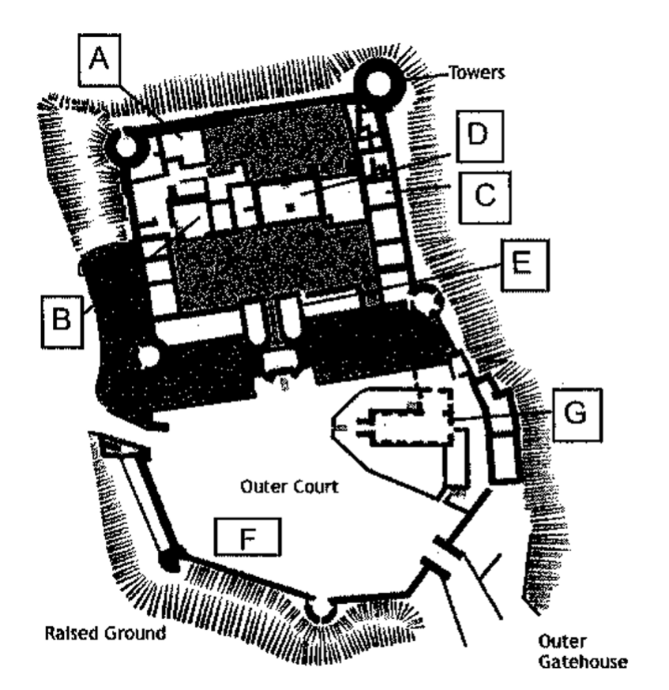

Complete the form below.
Write
NO MORE THAN THREE WORDS AND/OR A NUMBER for each answer.
Details of Order
| Party Host | Example: Customer's oldest daughter |
| Occasion | 18th birthday |
| Number of Guests Invited | |
| Customer Budget | £800 |
| Marquee Size | × 9 metres |
| Cost | £450 |
| £150 | |
| Lighting Cost | approximately £ |
| Number of Guests | seated 30 / standing 50 |
| Furniture Cost | per table £4.00 / per chair £3.00 |
| Dates Marquee Required |
Set-up date
To be taken down on June 7th |
Complete the form below.
Write NO MORE THAN TWO WORDS AND/OR A NUMBER for each answer.
Customer Details
| Name | |
| Postcode | |
| Contact Number |
Label the map below of a typical medieval castle. Write the correct letter, A–G, next to Questions 11–15.
11. Chapel
12. Great Hall
13. Great Chambers
14. Bakehouse
15. Stables
Choose the correct letter, A, B or C.
16. Medieval castles
17. The early medieval Keep served as
18. In later medieval castles, the Keep
19. Underground dungeons were built in response to
20. The least effective line of defence was
Choose the correct letter, A, B or C.
21. Julie and Dave thought the lecture
22. Hamlet was a play
23. In the time of James I
24. Shakespeare introduced ghosts into plays
25. Shakespeare's audience would probably have
What does Julie say about the following subjects?
Write the correct letter, A, B or C, next to questions
26–30.
| A | scornful, dismissive |
| B | open-minded |
| C | believing |
26. witches / astrology
27. ghosts
28. UFOs / aliens
29. premonitions
30. telepathy
Complete the notes below.
Write NO MORE THAN THREE WORDS for
each answer.
|
Darwin is credited with having
popular beliefs about Man's creation. However, Alfred Russell Wallace
simultaneously came up with an
to Darwin. Unfortunately for Wallace, Darwin seems to have been given the for the theory of evolution. Darwin's theory , upsetting the religious authorities of his time. Today, it is often accepted that Man is a product and not spontaneous creation. |
Complete the sentences below.
Write
NO MORE THAN TWO WORDS for each answer.
The absence of a might be seen by some to discredit Darwin's theory.
Finding an evolutionary bridge between Man and ape would provide undeniable for the theory of evolution.
When of the Piltdown Man was first unearthed in 1908, it seemed Darwin's theory was no longer in doubt.
In fact, the hoax proved that scientists and the Press alike believed in its validity.
After 40 years, Piltdown Man as being no more than a fake.